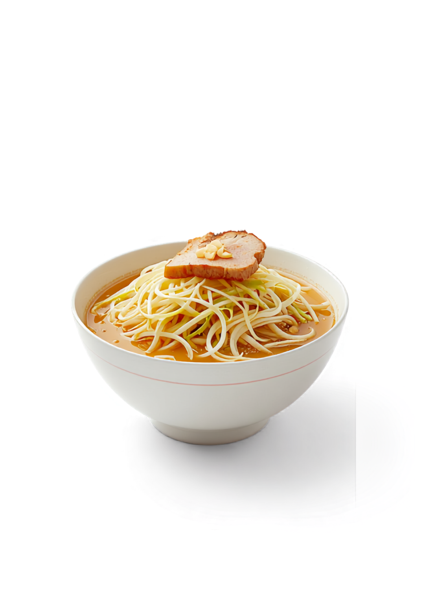

パワフルで食べ応え抜群の一杯を、清潔感のある明るい店内で。女性一人でも入りやすい、やさしい雰囲気の二郎系ラーメンです。

「二郎系」と聞くと少し身構えてしまうけれど、菊二朗は清潔感があって、明るくて。麺の量やトッピングの相談もしやすい接客だから、はじめての方も安心して食べられます。
おしゃれで綺麗な店内。女性一人でも、すっと入れる雰囲気です。
店員さんの接客はとても丁寧。麺の量やトッピングも気軽に聞けます。
「今どき1000円以下で、このクオリティ」。満足感は、しっかり。
券売機で食券を買ったら、あとは券に書き込むだけ。麺の量も、野菜も、アブラも、味の濃さも。大きな声で「コール」しなくていいから、はじめてでも安心です。
◦ 麺固めもオーダーできます。 卓上には唐辛子と「かえし」もあるので、食べながら味の濃さを調整できます。
まずは食券を購入します。
麺の量・野菜・アブラ・味の濃さを記入。
あとは、できあがりを待つだけ。
運ばれてきた瞬間のボリュームに驚くけれど、スープを一口飲めば、旨みがギュッ。太麺との相性がバッチリで、夢中で食べてしまう一杯です。
「女性一人でも入りやすい、やさしい雰囲気がとっても素敵。」
スープを一口飲むと旨みがギュッと詰まっていて、太めの麺との相性がバッチリ！シャキシャキの野菜と柔らかいチャーシューも絶品で、夢中で食べてしまいました。帰り道はなんだか元気になれる、そんな一杯。
— Google の口コミより今どき1000円以下で、このクオリティ！神としか言えん。特に荒微塵のニンニクが美味しい。BGMも自分の世代ど真ん中。さて、次回はいつ来ようかな。
— Google の口コミより（55歳・女性）300gまで同じ値段（980円）なので優しいです。食券に全マシと記載し麺固めをオーダー。ワシワシ麺が絡み、チャーシューもホロホロ。意外とペロッといけたので、次は300gを。
— Google の口コミより人気店ゆえ、時間帯によっては待ちが出ることも。お時間に余裕をもって、ぜひ「今日はお腹いっぱい食べたい！」という日にお越しください。
※ 店舗前は駐輪禁止です。ご注意ください。混雑時はお待ちいただく場合があります。